Grouped Frequency and Relative Frequency Tables and ChartsBảng tần số, tần số tương đối ghép nhóm và biểu đồ
Grade 9 · Topic: Frequency and Relative FrequencyLớp 9 · Chủ đề: Tần số và tần số tương đối
1Lesson IntroductionGiới thiệu bài học
Learning goalsMục tiêu bài học
By the end of this lesson you can:
Sau bài học này, em có thể:
recognize grouped data, groups \([a;\,b)\), the width and the midpoint of a group;
nhận biết được mẫu số liệu ghép nhóm, nhóm \([a;\,b)\), độ dài nhóm và giá trị đại diện của nhóm;
make a grouped frequency table and a grouped relative frequency table;
lập được bảng tần số ghép nhóm và bảng tần số tương đối ghép nhóm;
draw and read grouped relative frequency charts (histograms and line charts);
vẽ và đọc được biểu đồ tần số tương đối ghép nhóm dạng cột và dạng đoạn thẳng;
choose a suitable grouping and draw conclusions from real data.
chọn được cách ghép nhóm phù hợp và rút ra nhận xét từ dữ liệu thực tế.
2Mathematical VocabularyTừ vựng Toán học
grouped data – data whose values are put into groups (class intervals) \([a;\,b)\).
Mẫu số liệu ghép nhóm – mẫu số liệu mà các giá trị được xếp vào các nhóm dạng \([a;\,b)\).
group (class interval) \([a;\,b)\) – all values \(x\) with \(a\le x\lt b\); \(a\) is the lower boundary, \(b\) the upper boundary.
Nhóm \([a;\,b)\) – gồm các giá trị \(x\) thỏa mãn \(a\le x\lt b\); \(a\) là đầu mút trái, \(b\) là đầu mút phải.
class width – the difference \(b-a\).
Độ dài nhóm – hiệu \(b-a\).
midpoint (representative value) – the number \(\dfrac{a+b}{2}\).
Giá trị đại diện của nhóm – số \(\dfrac{a+b}{2}\).
grouped frequency table / grouped relative frequency table – tables of the groups and their frequencies / relative frequencies.
Bảng tần số ghép nhóm / bảng tần số tương đối ghép nhóm – bảng ghi các nhóm cùng tần số / tần số tương đối của chúng.
grouped relative frequency chart – a histogram (touching bars) or a line chart through the midpoints.
Biểu đồ tần số tương đối ghép nhóm – dạng cột (các cột liền nhau) hoặc dạng đoạn thẳng (qua các giá trị đại diện).
3Useful English PhrasesCụm từ tiếng Anh thường gặp
Group the data into class intervals of width 5.
Ghép số liệu thành các nhóm có độ dài 5.
The value 15 belongs to the group \([15;\,20)\), not to \([10;\,15)\).
Giá trị 15 thuộc nhóm \([15;\,20)\), không thuộc nhóm \([10;\,15)\).
The group \([10;\,15)\) has frequency 10 and relative frequency 25%.
Nhóm \([10;\,15)\) có tần số 10 và tần số tương đối 25%.
The bars of a histogram touch each other.
Các cột của biểu đồ tần số tương đối ghép nhóm dạng cột nằm liền nhau.
Plot each point at the midpoint of its group.
Mỗi điểm được đặt tại giá trị đại diện của nhóm.
4Prerequisite ReviewÔn tập kiến thức nền
Lesson 22. The frequency \(m\) of a value is the number of times it appears; the frequencies add up to the sample size \(n\).
Bài 22. Tần số \(m\) của một giá trị là số lần giá trị đó xuất hiện; tổng các tần số bằng cỡ mẫu \(n\).
Lesson 23. Relative frequency \(f=\dfrac{m}{n}\cdot100\%\); the relative frequencies add up to \(100\%\).
Bài 23. Tần số tương đối \(f=\dfrac{m}{n}\cdot100\%\); tổng các tần số tương đối bằng \(100\%\).
5TheoryLý thuyết
5.1 Grouped data and the grouped frequency tableMẫu số liệu ghép nhóm và bảng tần số ghép nhóm
When the data have many different values (heights, times, masses…), a frequency table of single values is long and hard to read. We put the values into groups.
Khi mẫu số liệu có nhiều giá trị khác nhau (chiều cao, thời gian, khối lượng…), bảng tần số từng giá trị rất dài và khó nhận xét. Khi đó ta xếp các giá trị vào các nhóm.
GroupsNhóm số liệu
A group \([a;\,b)\) contains every value \(x\) with \(a\le x\lt b\): the value \(a\) belongs to the group, the value \(b\) does not (it belongs to the next group \([b;\,c)\)).
Nhóm \([a;\,b)\) gồm mọi giá trị \(x\) thỏa mãn \(a\le x\lt b\): giá trị \(a\) thuộc nhóm, giá trị \(b\) không thuộc nhóm (nó thuộc nhóm tiếp theo \([b;\,c)\)).
\(a\), \(b\): the lower and upper boundaries; \(b-a\): the class width.
\(a\), \(b\): đầu mút trái và đầu mút phải; \(b-a\): độ dài nhóm.
\(\dfrac{a+b}{2}\): the midpoint (representative value) of the group.
\(\dfrac{a+b}{2}\): giá trị đại diện của nhóm.
The frequency of a group is the number of values in it. A grouped frequency table lists the groups and their frequencies.
Tần số của một nhóm là số giá trị thuộc nhóm đó. Bảng tần số ghép nhóm ghi các nhóm và tần số tương ứng.
| GroupNhóm | \([a_1;\,a_2)\) | \([a_2;\,a_3)\) | \(\dots\) | \([a_k;\,a_{k+1})\) |
|---|---|---|---|---|
| Frequency (m)Tần số (m) | \(m_1\) | \(m_2\) | \(\dots\) | \(m_k\) |
Always \(m_1+m_2+\dots+m_k=n\).
Luôn có \(m_1+m_2+\dots+m_k=n\).
How to groupCách ghép nhóm
Usually the groups have the same width; we often choose from 4 to 8 groups.
Thường chia các nhóm có cùng độ dài; số nhóm thường từ 4 đến 8.
The first group must contain the smallest value, the last group the largest value.
Nhóm đầu tiên phải chứa giá trị nhỏ nhất, nhóm cuối cùng phải chứa giá trị lớn nhất.
The last group may be written \([a_k;\,a_{k+1}]\) so that it also contains its upper boundary.
Nhóm cuối có thể viết dạng \([a_k;\,a_{k+1}]\) để chứa cả đầu mút phải.
For example, the time (minutes) that 40 students of class 9A take to go to school:
Ví dụ, thời gian (phút) đi từ nhà đến trường của 40 học sinh lớp 9A:
| Group (minutes)Nhóm (phút) | [5; 10) | [10; 15) | [15; 20) | [20; 25) | [25; 30) |
|---|---|---|---|---|---|
| Frequency (m)Tần số (m) | 6 | 10 | 12 | 8 | 4 |
5.2 The grouped relative frequency tableBảng tần số tương đối ghép nhóm
DefinitionĐịnh nghĩa
The relative frequency of the group \(i\) is \(f_i=\dfrac{m_i}{n}\cdot100\%\). The grouped relative frequency table lists the groups and their relative frequencies; \(f_1+f_2+\dots+f_k=100\%\).
Tần số tương đối của nhóm thứ \(i\) là \(f_i=\dfrac{m_i}{n}\cdot100\%\). Bảng tần số tương đối ghép nhóm ghi các nhóm và tần số tương đối tương ứng; \(f_1+f_2+\dots+f_k=100\%\).
For the 40 students: \(\dfrac{6}{40}\cdot100\%=15\%\), \(\dfrac{10}{40}\cdot100\%=25\%\), …
Với 40 học sinh trên: \(\dfrac{6}{40}\cdot100\%=15\%\), \(\dfrac{10}{40}\cdot100\%=25\%\), …
| Group (minutes)Nhóm (phút) | [5; 10) | [10; 15) | [15; 20) | [20; 25) | [25; 30) |
|---|---|---|---|---|---|
| Relative frequency (f)Tần số tương đối (f) | \(15\%\)\(15\%\) | \(25\%\)\(25\%\) | \(30\%\)\(30\%\) | \(20\%\)\(20\%\) | \(10\%\)\(10\%\) |
5.3 Grouped relative frequency chartsBiểu đồ tần số tương đối ghép nhóm
Two kinds of chartHai dạng biểu đồ
Histogram (bar chart): on the horizontal axis mark the boundaries of the groups; above each group draw a bar whose height is its relative frequency. The bars touch each other (there are no gaps between groups).
Dạng cột: trên trục ngang ghi các đầu mút của nhóm; trên mỗi nhóm vẽ một cột có chiều cao bằng tần số tương đối của nhóm. Các cột nằm liền nhau (giữa các nhóm không có khoảng trống).
Line chart: for each group plot the point \((x_i;\,f_i)\), where \(x_i\) is the midpoint of the group; join the points by segments.
Dạng đoạn thẳng: với mỗi nhóm, vẽ điểm \((x_i;\,f_i)\), trong đó \(x_i\) là giá trị đại diện của nhóm; nối các điểm liên tiếp bằng các đoạn thẳng.
In the same way we draw grouped frequency charts (the heights are the frequencies \(m_i\)).
Tương tự, ta vẽ biểu đồ tần số ghép nhóm (chiều cao là tần số \(m_i\)).
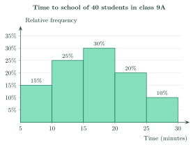
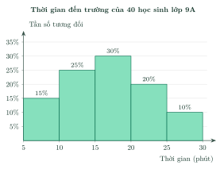
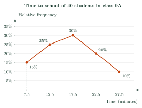
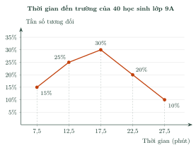
6Worked ExamplesVí dụ có lời giải
ExampleVí dụ 1RememberingNhận biết – Groups, width and midpointNhóm, độ dài nhóm, giá trị đại diện
The times of the 40 students above are grouped into \([5;\,10)\), \([10;\,15)\), \([15;\,20)\), \([20;\,25)\), \([25;\,30)\).
(a) Which group contains a student who needs exactly 15 minutes?
(b) What is the class width?
(c) What is the midpoint of the group \([20;\,25)\)?
Thời gian của 40 học sinh ở trên được ghép thành các nhóm \([5;\,10)\), \([10;\,15)\), \([15;\,20)\), \([20;\,25)\), \([25;\,30)\).
a) Bạn cần đúng 15 phút thuộc nhóm nào?
b) Độ dài mỗi nhóm bằng bao nhiêu?
c) Giá trị đại diện của nhóm \([20;\,25)\) là bao nhiêu?
Analysis: A group \([a;\,b)\) contains \(a\) but not \(b\).
Phân tích: Nhóm \([a;\,b)\) chứa \(a\) nhưng không chứa \(b\).
(a) \(15\le15\lt20\): the group \([15;\,20)\) (not \([10;\,15)\), because \(15\) is not less than \(15\)).
a) \(15\le15\lt20\): nhóm \([15;\,20)\) (không phải \([10;\,15)\) vì \(15\) không nhỏ hơn \(15\)).
(b) The width is \(10-5=5\) (minutes).
b) Độ dài nhóm là \(10-5=5\) (phút).
(c) \(\dfrac{20+25}{2}=22.5\).
c) \(\dfrac{20+25}{2}=22{,}5\).
(a) \([15;\,20)\);
(b) 5 minutes;
(c) 22.5.
a) \([15;\,20)\);
b) 5 phút;
c) 22,5.
ExampleVí dụ 2UnderstandingThông hiểu – Making a grouped frequency tableLập bảng tần số ghép nhóm
The heights (cm) of 20 seedlings in a school garden are: 17, 12, 20, 25, 15, 22, 19, 14, 27, 24, 16, 21, 10, 18, 29, 23, 15, 26, 20, 17. Make the grouped frequency table with the groups \([10;\,15)\), \([15;\,20)\), \([20;\,25)\), \([25;\,30)\).
Chiều cao (cm) của 20 cây giống trong vườn trường là: 17, 12, 20, 25, 15, 22, 19, 14, 27, 24, 16, 21, 10, 18, 29, 23, 15, 26, 20, 17. Lập bảng tần số ghép nhóm với các nhóm \([10;\,15)\), \([15;\,20)\), \([20;\,25)\), \([25;\,30)\).
Analysis: Count the values in each group; a value equal to a boundary goes to the group on its right.
Phân tích: Đếm số giá trị thuộc mỗi nhóm; giá trị bằng đầu mút thì xếp vào nhóm bên phải.
\([10;\,15)\): 12, 14, 10 → 3 values. \([15;\,20)\): 17, 15, 19, 16, 18, 15, 17 → 7 values.
\([10;\,15)\): 12, 14, 10 → 3 giá trị. \([15;\,20)\): 17, 15, 19, 16, 18, 15, 17 → 7 giá trị.
\([20;\,25)\): 20, 22, 24, 21, 23, 20 → 6 values. \([25;\,30)\): 25, 27, 29, 26 → 4 values. Check: \(3+7+6+4=20\).
\([20;\,25)\): 20, 22, 24, 21, 23, 20 → 6 giá trị. \([25;\,30)\): 25, 27, 29, 26 → 4 giá trị. Kiểm tra: \(3+7+6+4=20\).
The grouped frequency table:
Bảng tần số ghép nhóm:
Height (cm)Chiều cao (cm) [10; 15) [15; 20) [20; 25) [25; 30) Frequency (m)Tần số (m) 3 7 6 4
Frequencies 3, 7, 6, 4.
Tần số lần lượt là 3, 7, 6, 4.
ExampleVí dụ 3Basic applicationVận dụng thấp – A grouped relative frequency tableBảng tần số tương đối ghép nhóm
Make the grouped relative frequency table for the times of the 40 students of class 9A (table in 5.1).
Lập bảng tần số tương đối ghép nhóm cho thời gian đến trường của 40 học sinh lớp 9A (bảng ở mục 5.1).
Analysis: Divide each frequency by 40, then multiply by 100%.
Phân tích: Chia mỗi tần số cho 40 rồi nhân với 100%.
\(\dfrac{6}{40}=15\%\); \(\dfrac{10}{40}=25\%\); \(\dfrac{12}{40}=30\%\); \(\dfrac{8}{40}=20\%\); \(\dfrac{4}{40}=10\%\).
\(\dfrac{6}{40}=15\%\); \(\dfrac{10}{40}=25\%\); \(\dfrac{12}{40}=30\%\); \(\dfrac{8}{40}=20\%\); \(\dfrac{4}{40}=10\%\).
Group (minutes)Nhóm (phút) [5; 10) [10; 15) [15; 20) [20; 25) [25; 30) Relative frequency (f)Tần số tương đối (f) \(15\%\)\(15\%\) \(25\%\)\(25\%\) \(30\%\)\(30\%\) \(20\%\)\(20\%\) \(10\%\)\(10\%\) Check: \(15+25+30+20+10=100\).
Kiểm tra: \(15+25+30+20+10=100\).
15%, 25%, 30%, 20%, 10%.
15%, 25%, 30%, 20%, 10%.
ExampleVí dụ 4Basic applicationVận dụng thấp – Drawing the chartsVẽ biểu đồ
Draw the grouped relative frequency histogram and line chart for the table in Example 3. Give the coordinates of the point for the group \([15;\,20)\).
Vẽ biểu đồ tần số tương đối ghép nhóm dạng cột và dạng đoạn thẳng cho bảng ở Ví dụ 3. Cho biết tọa độ của điểm ứng với nhóm \([15;\,20)\).
Analysis: Histogram: touching bars of heights 15, 25, 30, 20, 10 (%). Line chart: points at the midpoints 7.5; 12.5; 17.5; 22.5; 27.5.
Phân tích: Dạng cột: các cột liền nhau, cao 15; 25; 30; 20; 10 (%). Dạng đoạn thẳng: các điểm tại giá trị đại diện 7,5; 12,5; 17,5; 22,5; 27,5.
Histogram: mark 5, 10, 15, 20, 25, 30 on the horizontal axis and draw touching bars (see the first chart in 5.3).
Dạng cột: ghi 5, 10, 15, 20, 25, 30 trên trục ngang rồi vẽ các cột liền nhau (xem biểu đồ thứ nhất ở mục 5.3).
Line chart: the point of \([15;\,20)\) is \(\left(\dfrac{15+20}{2};\,30\right)=(17.5;\,30)\); the five points are joined by segments (second chart in 5.3).
Dạng đoạn thẳng: điểm ứng với nhóm \([15;\,20)\) là \(\left(\dfrac{15+20}{2};\,30\right)=(17{,}5;\,30)\); nối năm điểm bằng các đoạn thẳng (biểu đồ thứ hai ở mục 5.3).
\((17.5;\,30)\).
\((17{,}5;\,30)\).
ExampleVí dụ 5ApplicationVận dụng – Should the school run a bus?Có nên mở tuyến xe đưa đón?
The school will run a school bus if at least 30% of the students of classes 9A and 9B together need 20 minutes or more to go to school. Class 9B has 25 students:
Nhà trường sẽ mở tuyến xe đưa đón nếu có ít nhất 30% học sinh của hai lớp 9A và 9B cần từ 20 phút trở lên để đến trường. Lớp 9B có 25 học sinh:
| Group (minutes)Nhóm (phút) | [5; 10) | [10; 15) | [15; 20) | [20; 25) | [25; 30) |
|---|---|---|---|---|---|
| Frequency – 9BTần số – 9B | 4 | 6 | 7 | 5 | 3 |
(a) Which class has the higher proportion of students needing at least 20 minutes?
(b) Will the school run the bus?
a) Lớp nào có tỉ lệ học sinh cần từ 20 phút trở lên cao hơn?
b) Nhà trường có mở tuyến xe không?
Analysis: “At least 20 minutes” = the groups \([20;\,25)\) and \([25;\,30)\). The classes have different sizes, so compare proportions.
Phân tích: “Từ 20 phút trở lên” gồm hai nhóm \([20;\,25)\) và \([25;\,30)\). Hai lớp có sĩ số khác nhau nên phải so sánh tỉ lệ.
9A: \(8+4=12\) students, \(\dfrac{12}{40}\cdot100\%=30\%\). 9B: \(5+3=8\) students, \(\dfrac{8}{25}\cdot100\%=32\%\). So the proportion is higher in 9B (although \(8\lt12\)).
9A: \(8+4=12\) học sinh, \(\dfrac{12}{40}\cdot100\%=30\%\). 9B: \(5+3=8\) học sinh, \(\dfrac{8}{25}\cdot100\%=32\%\). Vậy tỉ lệ ở lớp 9B cao hơn (dù \(8\lt12\)).
Both classes: \(\dfrac{12+8}{40+25}\cdot100\%=\dfrac{20}{65}\cdot100\%\approx30.8\%\ge30\%\). The school will run the bus.
Cả hai lớp: \(\dfrac{12+8}{40+25}\cdot100\%=\dfrac{20}{65}\cdot100\%\approx30{,}8\%\ge30\%\). Nhà trường sẽ mở tuyến xe.
(a) 9B (32% > 30%);
(b) yes (about 30.8%).
a) Lớp 9B (32% > 30%);
b) Có (khoảng 30,8%).
7PracticeBài tập luyện tập
A. Multiple ChoiceA. Trắc nghiệm nhiều lựa chọn
The data on time are grouped into the groups \([0;\,5)\), \([5;\,10)\), \([10;\,15)\), \([15;\,20)\), \([20;\,25)\), \([25;\,30)\). Which group contains the value \(15\)?
Dữ liệu về thời gian được ghép thành các nhóm \([0;\,5)\), \([5;\,10)\), \([10;\,15)\), \([15;\,20)\), \([20;\,25)\), \([25;\,30)\). Giá trị \(15\) thuộc nhóm nào?
Answer: d. The group \([a;\,b)\) contains \(a\) but not \(b\): \(15\le 15\lt 20\).
Đáp án d. Nhóm \([a;\,b)\) chứa \(a\) nhưng không chứa \(b\): \(15\le 15\lt 20\).
The smallest value of a data set is 43 and the largest is 146. The data are grouped into groups \([40;\,60)\), \([60;\,80)\), … of the same width 20. How many groups are needed?
Giá trị nhỏ nhất của một mẫu số liệu là 43, giá trị lớn nhất là 146. Ghép số liệu thành các nhóm \([40;\,60)\), \([60;\,80)\), … có cùng độ dài 20. Cần bao nhiêu nhóm?
Answer: a. The last group must contain 146: \([140;\,160)\). From 40 to 160 there are \(\dfrac{160-40}{20}=6\) groups.
Đáp án a. Nhóm cuối phải chứa 146: \([140;\,160)\). Từ 40 đến 160 có \(\dfrac{160-40}{20}=6\) nhóm.
| Group (Height (cm)) | [150; 155) | [155; 160) | [160; 165) | [165; 170) | [170; 175) | [175; 180) |
|---|---|---|---|---|---|---|
| Frequency (m) | 3 | 5 | 15 | 2 | 8 | 7 |
| Nhóm (Chiều cao (cm)) | [150; 155) | [155; 160) | [160; 165) | [165; 170) | [170; 175) | [175; 180) |
|---|---|---|---|---|---|---|
| Tần số (m) | 3 | 5 | 15 | 2 | 8 | 7 |
Answer: c. \(f=\dfrac{15}{40}\cdot100\%=37.5\%\).
Đáp án c. \(f=\dfrac{15}{40}\cdot100\%=37{,}5\%\).
B. True or FalseB. Đúng hoặc sai
Here are the speeds (in km/h) of 20 motorbikes passing a speed camera: 66, 56, 41, 71, 50, 59, 77, 45, 48, 57, 43, 54, 47, 74, 49, 70, 43, 49, 50, 54. The group \([60;\,70)\) has frequency 1.
Dưới đây là tốc độ (km/h) của 20 xe máy đi qua một trạm đo tốc độ: 66, 56, 41, 71, 50, 59, 77, 45, 48, 57, 43, 54, 47, 74, 49, 70, 43, 49, 50, 54. Nhóm \([60;\,70)\) có tần số 1.
True. Count the values \(x\) with \(60\le x\lt 70\) (the value 60 belongs to this group, the value 70 does not): there are 1.
Đúng. Đếm các giá trị \(x\) thỏa mãn \(60\le x\lt 70\) (giá trị 60 thuộc nhóm này, giá trị 70 thì không): có 1 giá trị.
In the relative frequency line chart of grouped data, the point of the group \([90;\,120)\) has horizontal coordinate \(120\).
Trong biểu đồ tần số tương đối ghép nhóm dạng đoạn thẳng, điểm ứng với nhóm \([90;\,120)\) có hoành độ \(120\).
False. The horizontal coordinate is the midpoint \(\dfrac{90+120}{2}=105\).
Sai. Hoành độ là giá trị đại diện \(\dfrac{90+120}{2}=105\).
C. Short AnswerC. Trả lời ngắn
| Group (Score) | [40; 50) | [50; 60) | [60; 70) | [70; 80) | [80; 90) | [90; 100) |
|---|---|---|---|---|---|---|
| Frequency (m) | 11 | 2 | ? | 1 | 1 | 2 |
| Nhóm (Điểm) | [40; 50) | [50; 60) | [60; 70) | [70; 80) | [80; 90) | [90; 100) |
|---|---|---|---|---|---|---|
| Tần số (m) | 11 | 2 | ? | 1 | 1 | 2 |
Enter a number.
Nhập một số.
Answer: 3. \(20-(11+2+1+1+2)=3\).
Đáp số: 3. \(20-(11+2+1+1+2)=3\).
The relative frequency histogram shows the heights (in cm) of 25 students. What percentage of the students have a value of at least 160 cm?
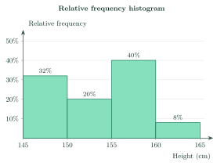
Biểu đồ tần số tương đối ghép nhóm dạng cột cho biết chiều cao (cm) của 25 học sinh. Bao nhiêu phần trăm số học sinh có giá trị từ 160 cm trở lên?
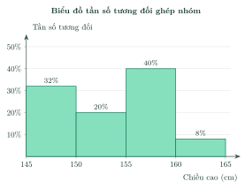
Enter a number (e.g. 37.5).
Nhập một số (ví dụ 37,5).
Answer: 8. Add the bars from 160 on: \(8=8\).
Đáp số: 8. Cộng các cột từ 160 trở đi: \(8=8\).
D1. Self-practice – RememberingD1. Tự luyện – Mức Nhận biết
What is the width of the group \([150;\,160)\)?
Độ dài của nhóm \([150;\,160)\) bằng bao nhiêu?
Answer: d. Width \(=160-150=10\).
Đáp án d. Độ dài nhóm \(=160-150=10\).
The histogram shows the speeds (in km/h) of 25 motorbikes passing a speed camera. Which group has the greatest frequency?
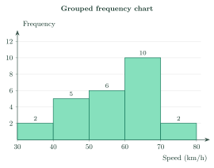
Biểu đồ tần số ghép nhóm dạng cột cho biết tốc độ (km/h) của 25 xe máy đi qua một trạm đo tốc độ. Nhóm nào có tần số lớn nhất?
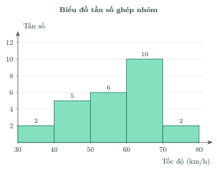
Answer: c. The highest bar: \([60;\,70)\), frequency 10.
Đáp án c. Cột cao nhất: \([60;\,70)\), tần số 10.
A grouped frequency table about time has the frequencies 13, 10, 11, 4, 3. What is the sample size?
Bảng tần số ghép nhóm về thời gian có các tần số 13, 10, 11, 4, 3. Cỡ mẫu bằng bao nhiêu?
Answer: a. \(n=13+10+11+4+3=41\).
Đáp án a. \(n=13+10+11+4+3=41\).
D2. Self-practice – UnderstandingD2. Tự luyện – Mức Thông hiểu
Here are the heights (in cm) of 20 students: 155, 150, 158, 149, 146, 155, 156, 156, 151, 161, 158, 157, 156, 159, 159, 159, 157, 155, 159, 153. Group the data into \([145;\,150)\), \([150;\,155)\), \([155;\,160)\), \([160;\,165)\). What is the frequency of the group \([150;\,155)\)?
Dưới đây là chiều cao (cm) của 20 học sinh: 155, 150, 158, 149, 146, 155, 156, 156, 151, 161, 158, 157, 156, 159, 159, 159, 157, 155, 159, 153. Ghép số liệu thành các nhóm \([145;\,150)\), \([150;\,155)\), \([155;\,160)\), \([160;\,165)\). Tần số của nhóm \([150;\,155)\) là bao nhiêu?
Answer: b. Values \(x\) with \(150\le x\lt 155\): 3 values.
Đáp án b. Các giá trị \(x\) với \(150\le x\lt 155\): có 3 giá trị.
| Group (Rainfall (mm)) | [0; 10) | [10; 20) | [20; 30) | [30; 40) | [40; 50) | [50; 60) |
|---|---|---|---|---|---|---|
| Relative frequency (f) | 10% | 17.5% | 7.5% | 30% | 25% | 10% |
| Nhóm (Lượng mưa (mm)) | [0; 10) | [10; 20) | [20; 30) | [30; 40) | [40; 50) | [50; 60) |
|---|---|---|---|---|---|---|
| Tần số tương đối (f) | 10% | 17,5% | 7,5% | 30% | 25% | 10% |
Answer: a. \(m=40\cdot25\%=10\).
Đáp án a. \(m=40\cdot25\%=10\).
| Group (Height (cm)) | [145; 150) | [150; 155) | [155; 160) | [160; 165) |
|---|---|---|---|---|
| Frequency (m) | 14 | 13 | 8 | 5 |
| Nhóm (Chiều cao (cm)) | [145; 150) | [150; 155) | [155; 160) | [160; 165) |
|---|---|---|---|---|
| Tần số (m) | 14 | 13 | 8 | 5 |
Answer: b. (midpoint; relative frequency) \(=\left(\dfrac{160+165}{2};\,\dfrac{5}{40}\cdot100\right)=(162.5;\,12.5)\).
Đáp án b. (giá trị đại diện; tần số tương đối) \(=\left(\dfrac{160+165}{2};\,\dfrac{5}{40}\cdot100\right)=(162{,}5;\,12{,}5)\).
D3. Self-practice – Basic applicationD3. Tự luyện – Mức Vận dụng thấp
The relative frequency line chart shows the daily rainfall (in mm) on 40 rainy days. How many days are in the group whose midpoint is \(45\)?
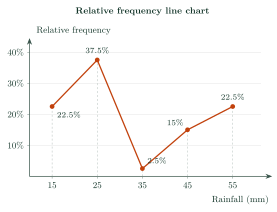
Biểu đồ tần số tương đối ghép nhóm dạng đoạn thẳng cho biết lượng mưa (mm) trong 40 ngày mưa. Có bao nhiêu ngày thuộc nhóm có giá trị đại diện \(45\)?
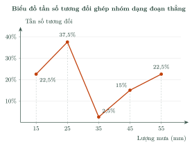
Answer: a. The midpoint \(45\) belongs to \([40;\,50)\) with \(f=15\%\): \(m=40\cdot15\%=6\).
Đáp án a. Giá trị đại diện \(45\) ứng với nhóm \([40;\,50)\) có \(f=15\%\): \(m=40\cdot15\%=6\).
| Group (Screen time (minutes)) | [30; 60) | [60; 90) | [90; 120) | [120; 150) | [150; 180) |
|---|---|---|---|---|---|
| Frequency (m) | 5 | 4 | 9 | 12 | 10 |
| Nhóm (Thời gian (phút)) | [30; 60) | [60; 90) | [90; 120) | [120; 150) | [150; 180) |
|---|---|---|---|---|---|
| Tần số (m) | 5 | 4 | 9 | 12 | 10 |
Answer: c. Height = relative frequency \(=\dfrac{12}{40}\cdot100\%=30\%\).
Đáp án c. Chiều cao cột = tần số tương đối \(=\dfrac{12}{40}\cdot100\%=30\%\).
| Group (Rainfall (mm)) | [0; 10) | [10; 20) | [20; 30) | [30; 40) |
|---|---|---|---|---|
| Frequency (m) | 9 | 13 | 7 | 11 |
| Nhóm (Lượng mưa (mm)) | [0; 10) | [10; 20) | [20; 30) | [30; 40) |
|---|---|---|---|---|
| Tần số (m) | 9 | 13 | 7 | 11 |
Answer: d. \([20;\,40)\) is the union of \([20;\,30)\) and \([30;\,40)\): \(7+11=18\).
Đáp án d. Nhóm \([20;\,40)\) gồm hai nhóm \([20;\,30)\) và \([30;\,40)\): \(7+11=18\).
D4. Self-practice – Advanced applicationD4. Tự luyện – Mức Vận dụng
| Group | [60; 70) | [70; 80) | [80; 90) | [90; 100) |
|---|---|---|---|---|
| Frequency – X | 9 | 14 | 14 | 3 |
| Frequency – Y | 3 | 9 | 8 | 5 |
| Nhóm | [60; 70) | [70; 80) | [80; 90) | [90; 100) |
|---|---|---|---|---|
| Tần số – X | 9 | 14 | 14 | 3 |
| Tần số – Y | 3 | 9 | 8 | 5 |
Answer: c. X: \(\dfrac{14+3}{40}\cdot100\%=42.5\%\); Y: \(\dfrac{8+5}{25}\cdot100\%=52\%\). The sample sizes differ, so compare relative frequencies.
Đáp án c. X: \(\dfrac{14+3}{40}\cdot100\%=42{,}5\%\); Y: \(\dfrac{8+5}{25}\cdot100\%=52\%\). Hai mẫu có cỡ khác nhau nên phải so sánh tần số tương đối.
The histogram shows the speeds of 40 motorbikes on a road with a speed limit of 50 km/h. What percentage of the motorbikes were speeding (speed at least 50 km/h)?
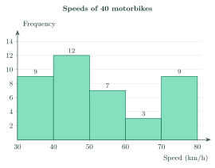
Biểu đồ dưới đây cho biết tốc độ của 40 xe máy trên một đoạn đường có tốc độ tối đa cho phép 50 km/h. Bao nhiêu phần trăm số xe đã chạy quá tốc độ (từ 50 km/h trở lên)?
Answer: d. Groups \([50;\,60)\), \([60;\,70)\), \([70;\,80)\): \(7+3+9=19\) motorbikes; \(\dfrac{19}{40}\cdot100\%=47.5\%\).
Đáp án d. Các nhóm \([50;\,60)\), \([60;\,70)\), \([70;\,80)\): \(7+3+9=19\) xe; \(\dfrac{19}{40}\cdot100\%=47{,}5\%\).
The values of a data set of 40 observations lie between 142 and 179. We want between 4 and 8 groups of the same width, starting at a multiple of the width. Which grouping is suitable?
Các giá trị của một mẫu 40 số liệu nằm trong khoảng từ 142 đến 179. Ta muốn ghép thành từ 4 đến 8 nhóm có cùng độ dài, nhóm đầu bắt đầu tại một bội của độ dài nhóm. Cách ghép nào phù hợp?
Answer: b. Width 5: groups from \(140\) to \(180\), that is 8 groups. Too many groups (or too few) make the table hard to read.
Đáp án b. Độ dài 5: các nhóm từ \(140\) đến \(180\), tức là 8 nhóm. Quá nhiều (hoặc quá ít) nhóm thì bảng khó đọc, khó nhận xét.
A. Multiple ChoiceA. Trắc nghiệm nhiều lựa chọn
The data on screen time are grouped into the groups \([30;\,60)\), \([60;\,90)\), \([90;\,120)\), \([120;\,150)\). Which group contains the value \(60\)?
Dữ liệu về thời gian dùng điện thoại được ghép thành các nhóm \([30;\,60)\), \([60;\,90)\), \([90;\,120)\), \([120;\,150)\). Giá trị \(60\) thuộc nhóm nào?
Answer: a. The group \([a;\,b)\) contains \(a\) but not \(b\): \(60\le 60\lt 90\).
Đáp án a. Nhóm \([a;\,b)\) chứa \(a\) nhưng không chứa \(b\): \(60\le 60\lt 90\).
The smallest value of a data set is 41 and the largest is 74. The data are grouped into groups \([40;\,50)\), \([50;\,60)\), … of the same width 10. How many groups are needed?
Giá trị nhỏ nhất của một mẫu số liệu là 41, giá trị lớn nhất là 74. Ghép số liệu thành các nhóm \([40;\,50)\), \([50;\,60)\), … có cùng độ dài 10. Cần bao nhiêu nhóm?
Answer: b. The last group must contain 74: \([70;\,80)\). From 40 to 80 there are \(\dfrac{80-40}{10}=4\) groups.
Đáp án b. Nhóm cuối phải chứa 74: \([70;\,80)\). Từ 40 đến 80 có \(\dfrac{80-40}{10}=4\) nhóm.
| Group (Height (cm)) | [145; 150) | [150; 155) | [155; 160) | [160; 165) | [165; 170) | [170; 175) |
|---|---|---|---|---|---|---|
| Frequency (m) | 5 | 4 | 10 | 11 | 10 | 10 |
| Nhóm (Chiều cao (cm)) | [145; 150) | [150; 155) | [155; 160) | [160; 165) | [165; 170) | [170; 175) |
|---|---|---|---|---|---|---|
| Tần số (m) | 5 | 4 | 10 | 11 | 10 | 10 |
Answer: a. \(f=\dfrac{4}{50}\cdot100\%=8\%\).
Đáp án a. \(f=\dfrac{4}{50}\cdot100\%=8\%\).
B. True or FalseB. Đúng hoặc sai
Here are the speeds (in km/h) of 20 motorbikes passing a speed camera: 30, 40, 21, 27, 57, 28, 39, 28, 26, 39, 37, 25, 26, 23, 29, 20, 39, 38, 31, 35. The group \([30;\,40)\) has frequency 8.
Dưới đây là tốc độ (km/h) của 20 xe máy đi qua một trạm đo tốc độ: 30, 40, 21, 27, 57, 28, 39, 28, 26, 39, 37, 25, 26, 23, 29, 20, 39, 38, 31, 35. Nhóm \([30;\,40)\) có tần số 8.
True. Count the values \(x\) with \(30\le x\lt 40\) (the value 30 belongs to this group, the value 40 does not): there are 8.
Đúng. Đếm các giá trị \(x\) thỏa mãn \(30\le x\lt 40\) (giá trị 30 thuộc nhóm này, giá trị 40 thì không): có 8 giá trị.
In the relative frequency line chart of grouped data, the point of the group \([5;\,10)\) has horizontal coordinate \(5\).
Trong biểu đồ tần số tương đối ghép nhóm dạng đoạn thẳng, điểm ứng với nhóm \([5;\,10)\) có hoành độ \(5\).
False. The horizontal coordinate is the midpoint \(\dfrac{5+10}{2}=7.5\).
Sai. Hoành độ là giá trị đại diện \(\dfrac{5+10}{2}=7{,}5\).
C. Short AnswerC. Trả lời ngắn
| Group (Speed (km/h)) | [30; 40) | [40; 50) | [50; 60) | [60; 70) |
|---|---|---|---|---|
| Frequency (m) | 14 | 9 | 5 | ? |
| Nhóm (Tốc độ (km/h)) | [30; 40) | [40; 50) | [50; 60) | [60; 70) |
|---|---|---|---|---|
| Tần số (m) | 14 | 9 | 5 | ? |
Enter a number.
Nhập một số.
Answer: 12. \(40-(14+9+5)=12\).
Đáp số: 12. \(40-(14+9+5)=12\).
The relative frequency histogram shows the daily rainfall (in mm) on 25 rainy days. What percentage of the days have a value less than 50 mm?
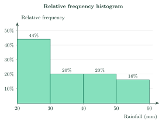
Biểu đồ tần số tương đối ghép nhóm dạng cột cho biết lượng mưa (mm) trong 25 ngày mưa. Bao nhiêu phần trăm số ngày có giá trị nhỏ hơn 50 mm?
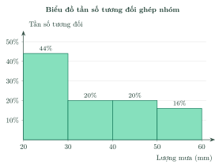
Enter a number (e.g. 37.5).
Nhập một số (ví dụ 37,5).
Answer: 84. Add the bars before 50: \(44+20+20=84\).
Đáp số: 84. Cộng các cột đứng trước 50: \(44+20+20=84\).
D1. Self-practice – RememberingD1. Tự luyện – Mức Nhận biết
Which statement about the group \([40;\,45)\) is correct?
Khẳng định nào về nhóm \([40;\,45)\) là đúng?
Answer: a. \([40;\,45)\) means \(40\le x\lt 45\).
Đáp án a. \([40;\,45)\) gồm các giá trị \(x\) với \(40\le x\lt 45\).
The histogram shows the time (in minutes) 20 students take to go to school. Which group has the greatest frequency?
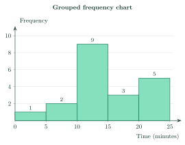
Biểu đồ tần số ghép nhóm dạng cột cho biết thời gian (phút) đi từ nhà đến trường của 20 học sinh. Nhóm nào có tần số lớn nhất?
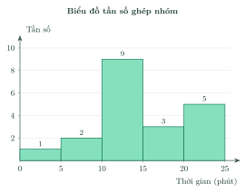
Answer: a. The highest bar: \([10;\,15)\), frequency 9.
Đáp án a. Cột cao nhất: \([10;\,15)\), tần số 9.
In a grouped relative frequency table, the sum of all relative frequencies is…
Trong bảng tần số tương đối ghép nhóm, tổng tất cả các tần số tương đối bằng…
Answer: a. \(f_1+f_2+\dots+f_k=100\%\).
Đáp án a. \(f_1+f_2+\dots+f_k=100\%\).
D2. Self-practice – UnderstandingD2. Tự luyện – Mức Thông hiểu
Here are the daily rainfall (in mm) on 20 rainy days: 51, 51, 30, 36, 32, 29, 55, 40, 33, 26, 50, 55, 51, 33, 52, 42, 36, 30, 41, 30. Group the data into \([20;\,30)\), \([30;\,40)\), \([40;\,50)\), \([50;\,60)\). What is the frequency of the group \([40;\,50)\)?
Dưới đây là lượng mưa (mm) trong 20 ngày mưa: 51, 51, 30, 36, 32, 29, 55, 40, 33, 26, 50, 55, 51, 33, 52, 42, 36, 30, 41, 30. Ghép số liệu thành các nhóm \([20;\,30)\), \([30;\,40)\), \([40;\,50)\), \([50;\,60)\). Tần số của nhóm \([40;\,50)\) là bao nhiêu?
Answer: c. Values \(x\) with \(40\le x\lt 50\): 3 values.
Đáp án c. Các giá trị \(x\) với \(40\le x\lt 50\): có 3 giá trị.
| Group (Height (cm)) | [155; 160) | [160; 165) | [165; 170) | [170; 175) | [175; 180) |
|---|---|---|---|---|---|
| Relative frequency (f) | 12% | 18% | 30% | 14% | 26% |
| Nhóm (Chiều cao (cm)) | [155; 160) | [160; 165) | [165; 170) | [170; 175) | [175; 180) |
|---|---|---|---|---|---|
| Tần số tương đối (f) | 12% | 18% | 30% | 14% | 26% |
Answer: b. \(m=50\cdot30\%=15\).
Đáp án b. \(m=50\cdot30\%=15\).
| Group (Screen time (minutes)) | [0; 30) | [30; 60) | [60; 90) | [90; 120) | [120; 150) | [150; 180) |
|---|---|---|---|---|---|---|
| Frequency (m) | 2 | 12 | 2 | 7 | 4 | 13 |
| Nhóm (Thời gian (phút)) | [0; 30) | [30; 60) | [60; 90) | [90; 120) | [120; 150) | [150; 180) |
|---|---|---|---|---|---|---|
| Tần số (m) | 2 | 12 | 2 | 7 | 4 | 13 |
Answer: a. (midpoint; relative frequency) \(=\left(\dfrac{120+150}{2};\,\dfrac{4}{40}\cdot100\right)=(135;\,10)\).
Đáp án a. (giá trị đại diện; tần số tương đối) \(=\left(\dfrac{120+150}{2};\,\dfrac{4}{40}\cdot100\right)=(135;\,10)\).
D3. Self-practice – Basic applicationD3. Tự luyện – Mức Vận dụng thấp
The relative frequency line chart shows the speeds (in km/h) of 40 motorbikes passing a speed camera. How many motorbikes are in the group whose midpoint is \(35\)?
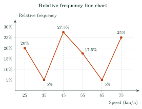
Biểu đồ tần số tương đối ghép nhóm dạng đoạn thẳng cho biết tốc độ (km/h) của 40 xe máy đi qua một trạm đo tốc độ. Có bao nhiêu xe máy thuộc nhóm có giá trị đại diện \(35\)?
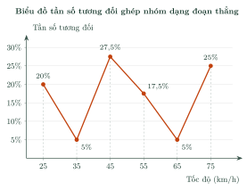
Answer: c. The midpoint \(35\) belongs to \([30;\,40)\) with \(f=5\%\): \(m=40\cdot5\%=2\).
Đáp án c. Giá trị đại diện \(35\) ứng với nhóm \([30;\,40)\) có \(f=5\%\): \(m=40\cdot5\%=2\).
| Group (Mass (g)) | [50; 55) | [55; 60) | [60; 65) | [65; 70) |
|---|---|---|---|---|
| Frequency (m) | 13 | 9 | 15 | 13 |
| Nhóm (Khối lượng (g)) | [50; 55) | [55; 60) | [60; 65) | [65; 70) |
|---|---|---|---|---|
| Tần số (m) | 13 | 9 | 15 | 13 |
Answer: a. Height = relative frequency \(=\dfrac{13}{50}\cdot100\%=26\%\).
Đáp án a. Chiều cao cột = tần số tương đối \(=\dfrac{13}{50}\cdot100\%=26\%\).
| Group (Screen time (minutes)) | [0; 30) | [30; 60) | [60; 90) | [90; 120) |
|---|---|---|---|---|
| Frequency (m) | 2 | 1 | 8 | 9 |
| Nhóm (Thời gian (phút)) | [0; 30) | [30; 60) | [60; 90) | [90; 120) |
|---|---|---|---|---|
| Tần số (m) | 2 | 1 | 8 | 9 |
Answer: c. \([60;\,120)\) is the union of \([60;\,90)\) and \([90;\,120)\): \(8+9=17\).
Đáp án c. Nhóm \([60;\,120)\) gồm hai nhóm \([60;\,90)\) và \([90;\,120)\): \(8+9=17\).
D4. Self-practice – Advanced applicationD4. Tự luyện – Mức Vận dụng
| Group | [5; 10) | [10; 15) | [15; 20) | [20; 25) |
|---|---|---|---|---|
| Frequency – 9A | 7 | 11 | 14 | 8 |
| Frequency – 9B | 3 | 5 | 8 | 4 |
| Nhóm | [5; 10) | [10; 15) | [15; 20) | [20; 25) |
|---|---|---|---|---|
| Tần số – 9A | 7 | 11 | 14 | 8 |
| Tần số – 9B | 3 | 5 | 8 | 4 |
Answer: a. 9A: \(\dfrac{14+8}{40}\cdot100\%=55\%\); 9B: \(\dfrac{8+4}{20}\cdot100\%=60\%\). The sample sizes differ, so compare relative frequencies.
Đáp án a. 9A: \(\dfrac{14+8}{40}\cdot100\%=55\%\); 9B: \(\dfrac{8+4}{20}\cdot100\%=60\%\). Hai mẫu có cỡ khác nhau nên phải so sánh tần số tương đối.
The histogram shows the speeds of 50 motorbikes on a road with a speed limit of 50 km/h. What percentage of the motorbikes were speeding (speed at least 50 km/h)?
Biểu đồ dưới đây cho biết tốc độ của 50 xe máy trên một đoạn đường có tốc độ tối đa cho phép 50 km/h. Bao nhiêu phần trăm số xe đã chạy quá tốc độ (từ 50 km/h trở lên)?
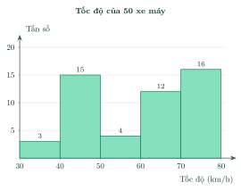
Answer: a. Groups \([50;\,60)\), \([60;\,70)\), \([70;\,80)\): \(4+12+16=32\) motorbikes; \(\dfrac{32}{50}\cdot100\%=64\%\).
Đáp án a. Các nhóm \([50;\,60)\), \([60;\,70)\), \([70;\,80)\): \(4+12+16=32\) xe; \(\dfrac{32}{50}\cdot100\%=64\%\).
The values of a data set of 40 observations lie between 41 and 68. We want between 4 and 8 groups of the same width, starting at a multiple of the width. Which grouping is suitable?
Các giá trị của một mẫu 40 số liệu nằm trong khoảng từ 41 đến 68. Ta muốn ghép thành từ 4 đến 8 nhóm có cùng độ dài, nhóm đầu bắt đầu tại một bội của độ dài nhóm. Cách ghép nào phù hợp?
Answer: b. Width 5: groups from \(40\) to \(70\), that is 6 groups. Too many groups (or too few) make the table hard to read.
Đáp án b. Độ dài 5: các nhóm từ \(40\) đến \(70\), tức là 6 nhóm. Quá nhiều (hoặc quá ít) nhóm thì bảng khó đọc, khó nhận xét.
A. Multiple ChoiceA. Trắc nghiệm nhiều lựa chọn
The data on time are grouped into the groups \([5;\,10)\), \([10;\,15)\), \([15;\,20)\), \([20;\,25)\), \([25;\,30)\), \([30;\,35)\). Which group contains the value \(21\)?
Dữ liệu về thời gian được ghép thành các nhóm \([5;\,10)\), \([10;\,15)\), \([15;\,20)\), \([20;\,25)\), \([25;\,30)\), \([30;\,35)\). Giá trị \(21\) thuộc nhóm nào?
Answer: d. The group \([a;\,b)\) contains \(a\) but not \(b\): \(20\le 21\lt 25\).
Đáp án d. Nhóm \([a;\,b)\) chứa \(a\) nhưng không chứa \(b\): \(20\le 21\lt 25\).
The smallest value of a data set is 25 and the largest is 46. The data are grouped into groups \([25;\,30)\), \([30;\,35)\), … of the same width 5. How many groups are needed?
Giá trị nhỏ nhất của một mẫu số liệu là 25, giá trị lớn nhất là 46. Ghép số liệu thành các nhóm \([25;\,30)\), \([30;\,35)\), … có cùng độ dài 5. Cần bao nhiêu nhóm?
Answer: a. The last group must contain 46: \([45;\,50)\). From 25 to 50 there are \(\dfrac{50-25}{5}=5\) groups.
Đáp án a. Nhóm cuối phải chứa 46: \([45;\,50)\). Từ 25 đến 50 có \(\dfrac{50-25}{5}=5\) nhóm.
| Group (Height (cm)) | [145; 150) | [150; 155) | [155; 160) | [160; 165) | [165; 170) |
|---|---|---|---|---|---|
| Frequency (m) | 10 | 4 | 9 | 2 | 15 |
| Nhóm (Chiều cao (cm)) | [145; 150) | [150; 155) | [155; 160) | [160; 165) | [165; 170) |
|---|---|---|---|---|---|
| Tần số (m) | 10 | 4 | 9 | 2 | 15 |
Answer: b. \(f=\dfrac{9}{40}\cdot100\%=22.5\%\).
Đáp án b. \(f=\dfrac{9}{40}\cdot100\%=22{,}5\%\).
B. True or FalseB. Đúng hoặc sai
Here are the daily screen time (in minutes) of 20 students: 146, 147, 132, 120, 106, 137, 128, 75, 131, 90, 99, 128, 136, 173, 67, 139, 139, 128, 120, 145. The group \([90;\,120)\) has frequency 4.
Dưới đây là thời gian dùng điện thoại mỗi ngày (phút) của 20 học sinh: 146, 147, 132, 120, 106, 137, 128, 75, 131, 90, 99, 128, 136, 173, 67, 139, 139, 128, 120, 145. Nhóm \([90;\,120)\) có tần số 4.
False. Count the values \(x\) with \(90\le x\lt 120\) (the value 90 belongs to this group, the value 120 does not): there are 3.
Sai. Đếm các giá trị \(x\) thỏa mãn \(90\le x\lt 120\) (giá trị 90 thuộc nhóm này, giá trị 120 thì không): có 3 giá trị.
In the relative frequency line chart of grouped data, the point of the group \([10;\,20)\) has horizontal coordinate \(5\).
Trong biểu đồ tần số tương đối ghép nhóm dạng đoạn thẳng, điểm ứng với nhóm \([10;\,20)\) có hoành độ \(5\).
False. The horizontal coordinate is the midpoint \(\dfrac{10+20}{2}=15\).
Sai. Hoành độ là giá trị đại diện \(\dfrac{10+20}{2}=15\).
C. Short AnswerC. Trả lời ngắn
| Group (Time (minutes)) | [10; 15) | [15; 20) | [20; 25) | [25; 30) |
|---|---|---|---|---|
| Frequency (m) | ? | 7 | 11 | 10 |
| Nhóm (Thời gian (phút)) | [10; 15) | [15; 20) | [20; 25) | [25; 30) |
|---|---|---|---|---|
| Tần số (m) | ? | 7 | 11 | 10 |
Enter a number.
Nhập một số.
Answer: 12. \(40-(7+11+10)=12\).
Đáp số: 12. \(40-(7+11+10)=12\).
The relative frequency histogram shows the daily screen time (in minutes) of 20 students. What percentage of the students have a value less than 90 minutes?
Biểu đồ tần số tương đối ghép nhóm dạng cột cho biết thời gian dùng điện thoại mỗi ngày (phút) của 20 học sinh. Bao nhiêu phần trăm số học sinh có giá trị nhỏ hơn 90 phút?
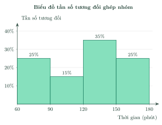
Enter a number (e.g. 37.5).
Nhập một số (ví dụ 37,5).
Answer: 25. Add the bars before 90: \(25=25\).
Đáp số: 25. Cộng các cột đứng trước 90: \(25=25\).
D1. Self-practice – RememberingD1. Tự luyện – Mức Nhận biết
What is the width of the group \([10;\,20)\)?
Độ dài của nhóm \([10;\,20)\) bằng bao nhiêu?
Answer: c. Width \(=20-10=10\).
Đáp án c. Độ dài nhóm \(=20-10=10\).
The histogram shows the masses (in grams) of 25 eggs. Which group has the greatest frequency?
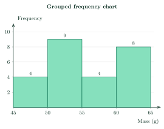
Biểu đồ tần số ghép nhóm dạng cột cho biết khối lượng (g) của 25 quả trứng gà. Nhóm nào có tần số lớn nhất?
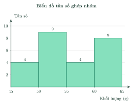
Answer: d. The highest bar: \([50;\,55)\), frequency 9.
Đáp án d. Cột cao nhất: \([50;\,55)\), tần số 9.
A grouped frequency table about mass has the frequencies 14, 6, 1, 7. What is the sample size?
Bảng tần số ghép nhóm về khối lượng có các tần số 14, 6, 1, 7. Cỡ mẫu bằng bao nhiêu?
Answer: b. \(n=14+6+1+7=28\).
Đáp án b. \(n=14+6+1+7=28\).
D2. Self-practice – UnderstandingD2. Tự luyện – Mức Thông hiểu
Here are the daily rainfall (in mm) on 20 rainy days: 27, 25, 42, 30, 39, 14, 20, 46, 40, 30, 48, 40, 17, 44, 21, 14, 40, 49, 44, 40. Group the data into \([10;\,20)\), \([20;\,30)\), \([30;\,40)\), \([40;\,50)\). What is the frequency of the group \([30;\,40)\)?
Dưới đây là lượng mưa (mm) trong 20 ngày mưa: 27, 25, 42, 30, 39, 14, 20, 46, 40, 30, 48, 40, 17, 44, 21, 14, 40, 49, 44, 40. Ghép số liệu thành các nhóm \([10;\,20)\), \([20;\,30)\), \([30;\,40)\), \([40;\,50)\). Tần số của nhóm \([30;\,40)\) là bao nhiêu?
Answer: c. Values \(x\) with \(30\le x\lt 40\): 3 values.
Đáp án c. Các giá trị \(x\) với \(30\le x\lt 40\): có 3 giá trị.
| Group (Score) | [40; 50) | [50; 60) | [60; 70) | [70; 80) | [80; 90) | [90; 100) |
|---|---|---|---|---|---|---|
| Relative frequency (f) | 30% | 20% | 2.5% | 25% | 10% | 12.5% |
| Nhóm (Điểm) | [40; 50) | [50; 60) | [60; 70) | [70; 80) | [80; 90) | [90; 100) |
|---|---|---|---|---|---|---|
| Tần số tương đối (f) | 30% | 20% | 2,5% | 25% | 10% | 12,5% |
Answer: d. \(m=40\cdot10\%=4\).
Đáp án d. \(m=40\cdot10\%=4\).
| Group (Height (cm)) | [150; 155) | [155; 160) | [160; 165) | [165; 170) | [170; 175) |
|---|---|---|---|---|---|
| Frequency (m) | 13 | 1 | 10 | 15 | 1 |
| Nhóm (Chiều cao (cm)) | [150; 155) | [155; 160) | [160; 165) | [165; 170) | [170; 175) |
|---|---|---|---|---|---|
| Tần số (m) | 13 | 1 | 10 | 15 | 1 |
Answer: d. (midpoint; relative frequency) \(=\left(\dfrac{155+160}{2};\,\dfrac{1}{40}\cdot100\right)=(157.5;\,2.5)\).
Đáp án d. (giá trị đại diện; tần số tương đối) \(=\left(\dfrac{155+160}{2};\,\dfrac{1}{40}\cdot100\right)=(157{,}5;\,2{,}5)\).
D3. Self-practice – Basic applicationD3. Tự luyện – Mức Vận dụng thấp
The relative frequency line chart shows the daily rainfall (in mm) on 25 rainy days. How many days are in the group whose midpoint is \(35\)?
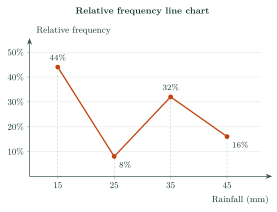
Biểu đồ tần số tương đối ghép nhóm dạng đoạn thẳng cho biết lượng mưa (mm) trong 25 ngày mưa. Có bao nhiêu ngày thuộc nhóm có giá trị đại diện \(35\)?
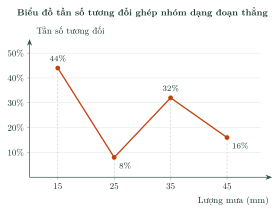
Answer: a. The midpoint \(35\) belongs to \([30;\,40)\) with \(f=32\%\): \(m=25\cdot32\%=8\).
Đáp án a. Giá trị đại diện \(35\) ứng với nhóm \([30;\,40)\) có \(f=32\%\): \(m=25\cdot32\%=8\).
| Group (Score) | [40; 50) | [50; 60) | [60; 70) | [70; 80) |
|---|---|---|---|---|
| Frequency (m) | 11 | 5 | 3 | 1 |
| Nhóm (Điểm) | [40; 50) | [50; 60) | [60; 70) | [70; 80) |
|---|---|---|---|---|
| Tần số (m) | 11 | 5 | 3 | 1 |
Answer: a. Height = relative frequency \(=\dfrac{11}{20}\cdot100\%=55\%\).
Đáp án a. Chiều cao cột = tần số tương đối \(=\dfrac{11}{20}\cdot100\%=55\%\).
| Group (Mass (g)) | [40; 45) | [45; 50) | [50; 55) | [55; 60) |
|---|---|---|---|---|
| Frequency (m) | 10 | 14 | 6 | 10 |
| Nhóm (Khối lượng (g)) | [40; 45) | [45; 50) | [50; 55) | [55; 60) |
|---|---|---|---|---|
| Tần số (m) | 10 | 14 | 6 | 10 |
Answer: a. \([50;\,60)\) is the union of \([50;\,55)\) and \([55;\,60)\): \(6+10=16\).
Đáp án a. Nhóm \([50;\,60)\) gồm hai nhóm \([50;\,55)\) và \([55;\,60)\): \(6+10=16\).
D4. Self-practice – Advanced applicationD4. Tự luyện – Mức Vận dụng
| Group | [60; 70) | [70; 80) | [80; 90) | [90; 100) |
|---|---|---|---|---|
| Frequency – X | 3 | 12 | 13 | 12 |
| Frequency – Y | 1 | 6 | 9 | 4 |
| Nhóm | [60; 70) | [70; 80) | [80; 90) | [90; 100) |
|---|---|---|---|---|
| Tần số – X | 3 | 12 | 13 | 12 |
| Tần số – Y | 1 | 6 | 9 | 4 |
Answer: d. X: \(\dfrac{13+12}{40}\cdot100\%=62.5\%\); Y: \(\dfrac{9+4}{20}\cdot100\%=65\%\). The sample sizes differ, so compare relative frequencies.
Đáp án d. X: \(\dfrac{13+12}{40}\cdot100\%=62{,}5\%\); Y: \(\dfrac{9+4}{20}\cdot100\%=65\%\). Hai mẫu có cỡ khác nhau nên phải so sánh tần số tương đối.
The histogram shows the speeds of 50 motorbikes on a road with a speed limit of 60 km/h. What percentage of the motorbikes were speeding (speed at least 60 km/h)?
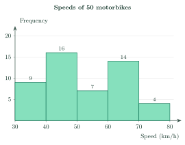
Biểu đồ dưới đây cho biết tốc độ của 50 xe máy trên một đoạn đường có tốc độ tối đa cho phép 60 km/h. Bao nhiêu phần trăm số xe đã chạy quá tốc độ (từ 60 km/h trở lên)?
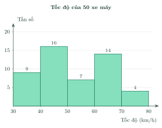
Answer: c. Groups \([60;\,70)\), \([70;\,80)\): \(14+4=18\) motorbikes; \(\dfrac{18}{50}\cdot100\%=36\%\).
Đáp án c. Các nhóm \([60;\,70)\), \([70;\,80)\): \(14+4=18\) xe; \(\dfrac{18}{50}\cdot100\%=36\%\).
The values of a data set of 40 observations lie between 31 and 78. We want between 4 and 8 groups of the same width, starting at a multiple of the width. Which grouping is suitable?
Các giá trị của một mẫu 40 số liệu nằm trong khoảng từ 31 đến 78. Ta muốn ghép thành từ 4 đến 8 nhóm có cùng độ dài, nhóm đầu bắt đầu tại một bội của độ dài nhóm. Cách ghép nào phù hợp?
Answer: a. Width 10: groups from \(30\) to \(80\), that is 5 groups. Too many groups (or too few) make the table hard to read.
Đáp án a. Độ dài 10: các nhóm từ \(30\) đến \(80\), tức là 5 nhóm. Quá nhiều (hoặc quá ít) nhóm thì bảng khó đọc, khó nhận xét.
8Common MistakesLỗi thường gặp
Putting a boundary value in the wrong group. The value 15 belongs to \([15;\,20)\), not to \([10;\,15)\).
Xếp giá trị bằng đầu mút vào sai nhóm. Giá trị 15 thuộc nhóm \([15;\,20)\), không thuộc nhóm \([10;\,15)\).
Confusing the width and the midpoint. \([20;\,25)\) has width \(5\) and midpoint \(22.5\).
Nhầm độ dài nhóm với giá trị đại diện. Nhóm \([20;\,25)\) có độ dài \(5\) và giá trị đại diện \(22{,}5\).
Leaving gaps between the bars. In a grouped histogram the bars touch each other.
Vẽ các cột cách nhau. Ở biểu đồ ghép nhóm dạng cột, các cột phải nằm liền nhau.
Plotting the line chart at a boundary. Each point is at the midpoint of its group.
Đặt điểm của biểu đồ đoạn thẳng tại đầu mút. Mỗi điểm phải đặt tại giá trị đại diện của nhóm.
Comparing frequencies of samples of different sizes. Compare relative frequencies.
So sánh tần số của hai mẫu khác cỡ. Phải so sánh tần số tương đối.
9Lesson SummaryTổng kết
Group \([a;\,b)\): \(a\le x\lt b\); width \(b-a\); midpoint \(\dfrac{a+b}{2}\).
Nhóm \([a;\,b)\): \(a\le x\lt b\); độ dài nhóm \(b-a\); giá trị đại diện \(\dfrac{a+b}{2}\).
Grouped frequency table: \(m_1+\dots+m_k=n\); grouped relative frequency table: \(f_i=\dfrac{m_i}{n}\cdot100\%\), \(f_1+\dots+f_k=100\%\).
Bảng tần số ghép nhóm: \(m_1+\dots+m_k=n\); bảng tần số tương đối ghép nhóm: \(f_i=\dfrac{m_i}{n}\cdot100\%\), \(f_1+\dots+f_k=100\%\).
Charts: histogram (touching bars) and line chart (points at the midpoints).
Biểu đồ: dạng cột (các cột liền nhau) và dạng đoạn thẳng (các điểm tại giá trị đại diện).
Key English: grouped data, class interval, class width, midpoint, grouped frequency table, grouped relative frequency chart.
Thuật ngữ cần nhớ (chạm vào để xem tiếng Anh): mẫu số liệu ghép nhóm, nhóm, độ dài nhóm, giá trị đại diện, bảng tần số ghép nhóm, biểu đồ tần số tương đối ghép nhóm.